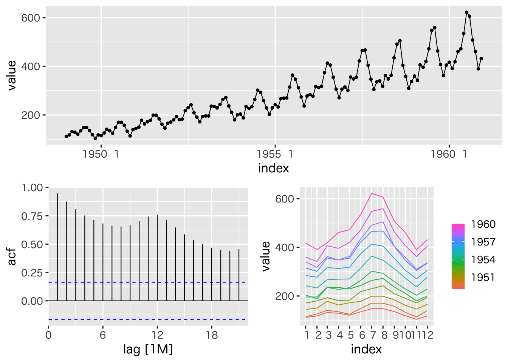
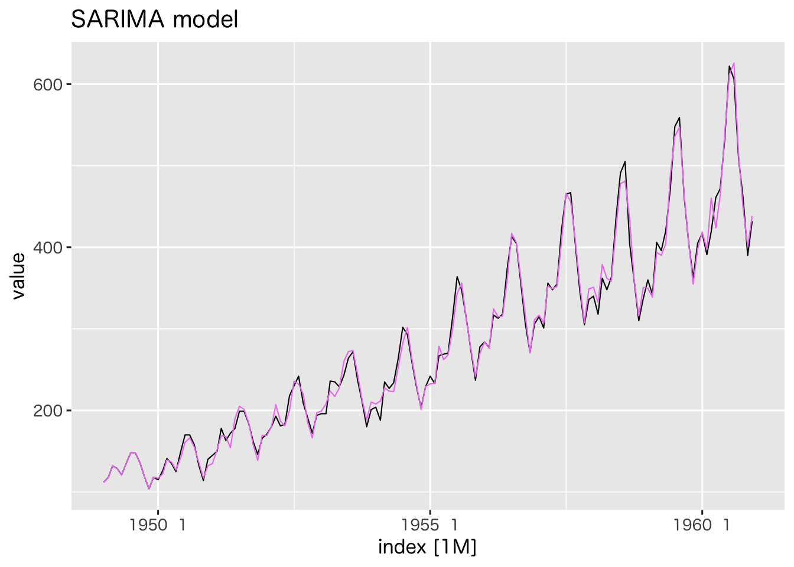
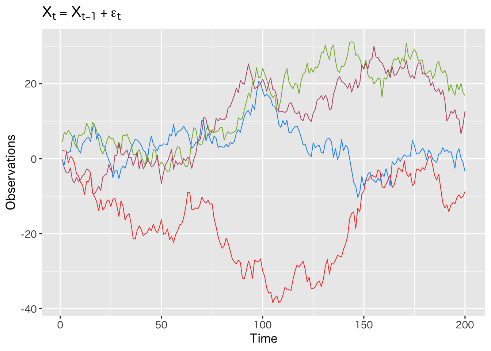
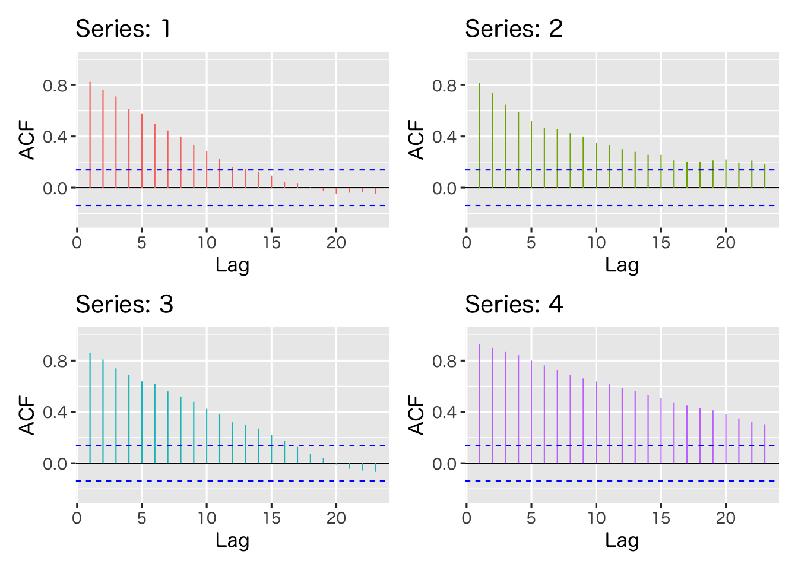
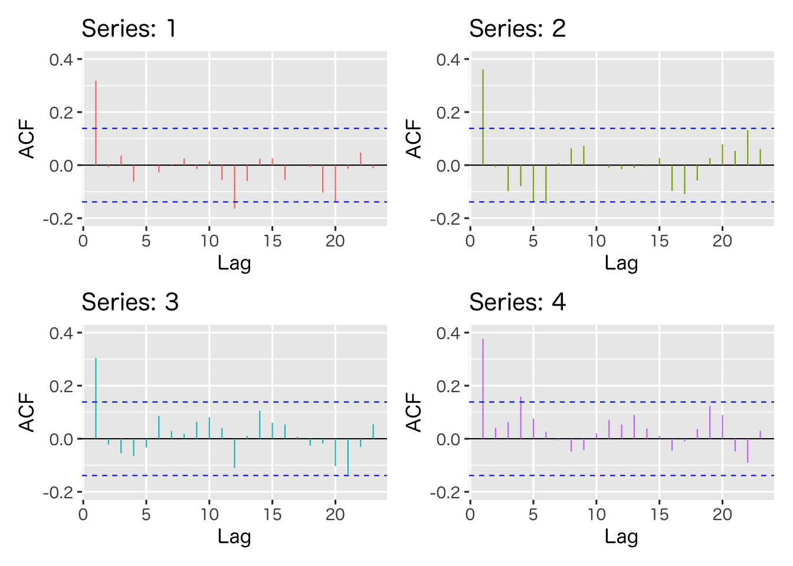
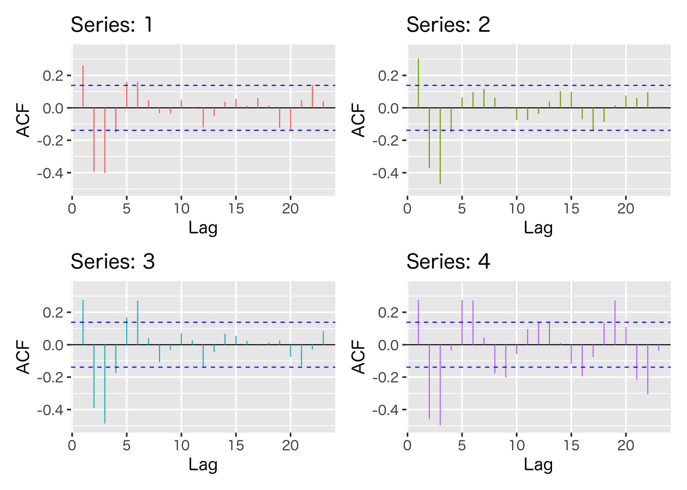

時系列解析
時系列の基本モデル
(Press ? for help, n and p for next and previous slide)
講義概要
- 第1回 : 時系列の基本モデル
- 第2回 : モデルの推定と予測
事例
データの概要
- 米国の航空機旅客量の変遷データ
datasets::AirPassengers(Rに標準で収録)- 1949年から1960年までの月別の集計データ
出典
Box, G. E. P., Jenkins, G. M. and Reinsel, G. C. (1976) Time Series Analysis, Forecasting and Control. Third Edition. Holden-Day. Series G.
| year | Jan | Feb | Mar | Apr | May | Jun | Jul | Aug | Sep | Oct | Nov | Dec |
|---|---|---|---|---|---|---|---|---|---|---|---|---|

Figure 1: 航空機旅客量データと自己・偏自己相関

Figure 2: 時系列の分解による表現
データのモデル化

Figure 3: モデルの推定とあてはめ
モデルにもとづく予測
Figure 4: 航空機旅客量の予測
時系列解析の概要
時系列解析とは
- 時系列データ
- 時間軸に沿って観測されたデータ
- 観測の順序に意味がある
- 異なる時点間での観測データの従属関係が重要
- 独立性にもとづく解析は行えない
- そのままでは大数の法則や中心極限定理は使えない
- 時系列解析の目的
- 時系列データの特徴を効果的に記述すること
- 時系列モデルの推定と評価
時系列データ
統計学・確率論における表現 : 確率過程
時間を添え字として持つ確率変数列
\begin{equation} X_{t},\;t=1,2,\dotsc,T \quad(\text{あるいは}\;t=0,1,\dotsc,T) \end{equation}- 時系列解析で利用される代表的な確率過程
- ホワイトノイズ
- ランダムウォーク
- 自己回帰モデル (ARモデル)
- 移動平均モデル (MAモデル)
- 自己回帰移動平均モデル (ARMAモデル)
基本的なモデル
ホワイトノイズ
定義
平均 \(0\) 分散 \(\sigma^2\) である確率変数の 確率分布 \(P\) からの 独立かつ同分布な確率変数列
\begin{equation} X_{t} = \epsilon_{t}, \quad \epsilon_{t} \overset{i.i.d.}{\sim} P \end{equation}記号 \(\mathrm{WN}(0,\sigma^2)\) で表記することが多い
\begin{equation} X_{t} \sim \mathrm{WN}(0,\sigma^2) \end{equation}
- 独立であるため系列としての予測は不可能
Figure 5: ホワイトノイズ (標準正規分布)
トレンドのあるホワイトノイズ
定義
\(\mu,\alpha\) を定数として 以下で定義される確率過程
\begin{equation} X_{t}=\mu+\alpha t+\epsilon_{t}, \quad \epsilon_{t} \sim \mathrm{WN}(0,\sigma^2) \end{equation}- トレンド \(\mu+\alpha t\) はより一般化されることもある
- \(t\) の1次式 (上記の基本的な場合)
- 高次の多項式
- 非線形関数(指数関数, 三角関数など)
- 平均 が時間とともに変動する時系列モデルの1つ

Figure 6: トレンドのあるホワイトノイズ
ランダムウォーク
定義
\(X_0\) を定数もしくは確率変数として 以下で帰納的に定義される確率過程
\begin{equation} X_{t}=X_{t-1}+\epsilon_{t}, \quad \epsilon_{t} \sim \mathrm{WN}(0,\sigma^2) \end{equation}- 分散 が時間とともに増加する時系列モデルの1つ
- 最も単純な 記憶 のあるモデル

Figure 7: ランダムウォーク
実習
R : 時系列データの扱い
- 関連するパッケージ
- stats : base R の基本的な統計に関するパッケージ
- 関数
ts(),acf()など - 標準でインストールされている
- 関数
fable/tsibble/feasts : 時系列のためのパッケージ
- 関数
ARIMA(),ACF(),autoplot()など
#' 最初に一度だけ以下のいずれかを実行しておく #' - Package タブから fable/tsibble/feasts をインストール #' - コンソール上で次のコマンドを実行 'install.packages(c("fable","tsibble","feasts")'forecastパッケージの tidyverse 版ggfortifyでも時系列を扱うことはできるが挙動が微妙に異なる
- 関数
- stats : base R の基本的な統計に関するパッケージ
R : 時系列の作成
関数
stats::ts()ts(data = NA, start = 1, end = numeric(), frequency = 1, deltat = 1, ts.eps = getOption("ts.eps"), class = if(nseries > 1) c("mts", "ts", "matrix", "array") else "ts", names = ) #' data: ベクトル，または行列(データフレーム) #' start: 開始時刻 #' end: 終了時刻 #' frequency: 単位時間あたりの観測回数典型的な使い方
x <- rnorm(24) # 正規分布のホワイトノイズ ts(data = x) # t=1,2,... を添字とする単純な時系列 ts(data = x, start = c(2020,1), frequency =12) # 2020年1月からの月ごと ts(data = x, start = c(2020,3), frequency =4) # 四半期ごとtsオブジェクトは通常その時間情報を利用して処理が行われるため 関数によっては扱いがベクトルと異なる場合があるので注意
R : 時系列の描画
関数 fabletools::autoplot()
autoplot(object, .vars = NULL, ...) #' 詳細は '?fabletools::autoplot.tbl_ts()'を参照典型的な使い方
#' 単一時系列の描画 x <- rnorm(240) # 正規分布のホワイトノイズ ts(x, start = c(2000,1), frequency = 12) |> # 2000年1月から毎月のデータ as_tsibble() |> # tsibbleクラスに変換 autoplot(value) # value (as_tsibbleによる時系列データの列名の規定値) を描画 #' 複数の系列を表示する場合 y <- rt(240, df=4) # t-分布のホワイトノイズ z <- ts(tibble(x,y), start = c(2000,1), frequency = 12) z |> as_tsibble() |> autoplot(value) # 同一のグラフで色を変えて描画 z |> as_tsibble() |> autoplot(value) + # 別にする場合は facet を指定すればよい facet_grid(key ~ .)
練習問題
- 指定された確率過程を生成して図示しなさい
- 平均0，分散4の正規分布に従うホワイトノイズ
- 上記のホワイトノイズに 初期値-1で単位時刻あたり1/20で増加するトレンドを持つ確率過程
- 上記のホワイトノイズから生成されるランダムウォーク
より一般的なモデル
自己回帰過程
定義 (AR(p); 次数 \(p\) の auto regressive の略)
\(a_1,\dotsc,a_p\)を定数とし \(X_1,\dotsc,X_p\)が初期値として与えられたとき 以下で帰納的に定義される確率過程
\begin{equation} X_{t}=a_1X_{t-1}+\cdots+a_pX_{t-p}+\epsilon_{t}, \quad \epsilon_{t} \sim \mathrm{WN}(0,\sigma^2) \end{equation}- ランダムウォークの一般化
- \(p=1, a_1=1\) かつ \(\epsilon_{t}\) が独立同分布ならランダムウォーク
- 忘却 しながら記憶するモデル (\(|a_i|<1\) などの条件が必要)
- ランダムウォークの一般化

Figure 8: AR過程
移動平均過程
定義 (MA(q); 次数 \(q\) の moving average の略)
\(b_1,\dotsc,b_q\)を定数とし， \(X_1,\dotsc,X_q\)が初期値として与えられたとき 以下で帰納的に定義される確率過程
\begin{equation} X_{t} = b_1\epsilon_{t-1}+\cdots+b_q\epsilon_{t-q}+\epsilon_{t}, \quad \epsilon_{t} \sim \mathrm{WN}(0,\sigma^2) \end{equation}- 記憶のあるホワイトノイズ (構成する部品を記憶)

Figure 9: MA過程
自己回帰移動平均過程
定義 (ARMA(\(p,q\)); 次数 \((p,q)\))
\(a_1,\dotsc,a_p,b_1,\dotsc,b_q\) を定数とし \(X_1,\dotsc,X_{\max\{p,q\}}\) が初期値として与えられたとき 以下で帰納的に定まる確率過程
\begin{align} X_{t} &= a_1X_{t-1}+\cdots+a_pX_{t-p}\\ &\quad+ b_1\epsilon_{t-1}+\cdots+b_q\epsilon_{t-q} +\epsilon_{t},\\ &\quad \epsilon_{t} \sim \mathrm{WN}(0,\sigma^2) \end{align}- AR(\(p\))モデルはARMA(\(p,0\))，MA(\(q\))モデルはARMA(\(0,q\))
- 単純な形ながら異なる時点間の従属構造を柔軟に記述
- 基本的な時系列モデルとして広く利用されている

Figure 10: ARMA過程
実習
練習問題
- 平均0，分散1のホワイトノイズを用いて，
以下の指定された確率過程を生成し，図示しなさい
- 係数\(a_{1}=0.67,a_{2}=0.26\)を持つAR(2)過程
- 係数\(b_{1}=0.44,b_{2}=0.08\)を持つMA(2)過程
- 係数\(a_{1}=0.8,a_{2}=-0.64,b_{1}=-0.5\)を持つARMA(2,1)過程
定常過程と非定常過程
弱定常性
- 確率過程\(X_{t},\;t=1,\dotsc,T\)が次の性質をもつ
\(X_{t}\)の平均は時点\(t\)によらない
\begin{equation} \mathbb{E}[X_{t}]=\mu \quad \text{(時間の添字を持たない)} \end{equation}\(X_{t}\)と\(X_{t+h}\)の共分散は時点\(t\)によらず時差\(h\)のみで定まる
\begin{equation} \mathrm{Cov}(X_{t},X_{t+h}) =\gamma(h) \quad \text{(時間の添字を持たない)} \end{equation}特に\(X_{t}\)の分散は時点\(t\)によらない (\(h=0\)の場合)
\begin{equation} \mathrm{Var}(X_{t}) =\gamma(0), \quad \text{(\(X_{t}\)は二乗可積分であることを仮定)} \end{equation}
定常性と非定常性
- 定常でない確率過程は 非定常 であるという
- いろいろな確率過程の定常性
- 定常 : ホワイトノイズ, MA
- 非定常 : トレンドのあるホワイトノイズ, ランダムウォーク
- 定常にも非定常にもなりうる : AR, ARMA
非定常過程の難しさ
- 性質を特徴付ける統計量が観測値から得られない
- 平均や分散などの基本的な統計量が時間によって変動する
- 1つの時系列から記述統計量の推測は一般にできない
- 擬似相関の問題
- 2つの独立なランダムウォークは高い確率で“相関”を持つ
- 独立な時系列にも関わらず見掛けの相関が現れることがある
- http://tylervigen.com/spurious-correlations
- 因果推論などの潜伏変数とは異なる問題
- 2つの独立なランダムウォークは高い確率で“相関”を持つ
非定常過程の取り扱い
- 定常過程とみなせるように変換して分析を実行
階差系列
ランダムウォークは階差をとればホワイトノイズ(定常過程)となる
\begin{equation} X_{t}=X_{t-1}+\epsilon_{t} \quad\Rightarrow\quad Y_{t}=X_{t}-X_{t-1}=\epsilon_{t} \end{equation}対数変換
対数変換と階差で微小な比率の変動を取り出すことができる
\begin{equation} X_{t}=(1+\epsilon_{t})X_{t-1} \quad\Rightarrow\quad Y_{t}=\log(X_{t})-\log(X_{t-1}) =\log(1+\epsilon_{t}) \simeq\epsilon_{t} \end{equation}トレンド成分+季節成分+変動成分への分解
適当な仮説のもとに取り扱いやすい成分の和に分解する
自己共分散・自己相関
自己共分散・自己相関
- 確率過程\(X_{t}\)が 定常過程 の場合
\(X_{t}\) と \(X_{t+h}\) の共分散は時点\(t\)によらずラグ\(h\)のみで定まる
自己共分散 (定常過程の性質よりラグは\(h\ge0\)を考えればよい)
\begin{equation} \mathrm{Cov}(X_{t},X_{t+h}) =\gamma(h) \end{equation}\(X_{t}\) と \(X_{t+h}\) の相関も\(t\)によらずラグ\(h\)のみで定まる
自己相関
\begin{equation} \mathrm{Cov}(X_{t},X_{t+h})/\mathrm{Var}(X_{t}) =\gamma(h)/\gamma(0) \end{equation}
- 異なる時点間での観測データの従属関係を要約する最も基本的な統計量
標本自己共分散・標本自己相関
- 観測データ \(X_1,\dotsc,X_{T}\) からの推定
ラグ\(h\)の自己共分散の推定 : 標本自己共分散
\begin{equation} \hat\gamma(h) = \frac{1}{T}\sum_{t=1}^{T-h}(X_{t}-\bar{X})(X_{t+h}-\bar{X}) \end{equation}\(\bar{X}=\frac{1}{T}\sum_{t=1}^TX_{t}\) は標本平均
ラグ\(h\)での自己相関の推定 : 標本自己相関
\begin{equation} \hat\gamma(h)/\hat\gamma(0) = \frac{\sum_{t=1}^{T-h}(X_{t}-\bar{X})(X_{t+h}-\bar{X})}{\sum_{t=1}^T(X_{t}-\bar{X})^2} \end{equation}
数値例
- 同じモデルに従うパス(系列)の自己相関を比較する
- 自己回帰過程 (AR過程)
- 移動平均過程 (MA過程)
- 自己回帰移動平均過程 (ARMA過程)

Figure 11: AR過程の自己相関

Figure 12: MA過程の自己相関

Figure 13: ARMA過程の自己相関
実習
R : 自己相関・自己共分散の計算・描画
関数
stats::acf()acf(x, lag.max = NULL, type = c("correlation", "covariance", "partial"), plot = TRUE, na.action = na.fail, demean = TRUE, ...) #' x: 時系列データ #' lag.max: 計算するラグの最大値 #' type: 標準は相関, 共分散と偏相関を選ぶこともできる #' plot: 描画するか否か #' na.action: 欠損値の処理，標準は欠損を含むと計算しない #' demean: 共分散の計算において平均を引くか否か- 引数
plotの真偽で描画(graphics系)・計算のみを制御できる
- 引数
関数 feats::ACF()
ACF(.data, y, ..., lag_max = NULL, type = c("correlation", "covariance", "partial"), na.action = na.contiguous, demean = TRUE, tapered = FALSE) #' .data: 時系列データ (tsibbleクラス) #' y: 計算対象の列名 #' type: 標準は相関, 共分散と偏相関を選ぶこともできる #' na.action: 欠損値の処理，標準は欠損を含むと計算しない #' demean: 共分散の計算において平均を引くか否か- 関数
acf()とほぼ同様(lag=0を表示しない)に描画(graphics系)・計算を行う - 返値を
autoplot()に渡せばグラフを描画する 典型的な使い方
toy_acf <- arima.sim(model = list(ar = c(0.8, -0.64), ma = c(-0.5)), n = 200) |> as_tsibble() |> ACF(value) toy_acf |> autoplot()
- 関数
練習問題
- 以下の問に答えなさい
- 同じAR過程のモデルから生成した時系列の自己相関を比較しなさい
(前の練習問題を利用すればよい) - MA過程についても同様な比較を行いなさい
- ARMA過程についても同様な比較を行いなさい
- 同じAR過程のモデルから生成した時系列の自己相関を比較しなさい
次回の内容
- 第1回 : 時系列の基本モデル
- 第2回 : モデルの推定と予測